Part 1 — Development
Try_And_Break_Me is a psychological horror game set inside a fake desktop operating system. You play a cybersecurity worker whose CEO asks everyone to train an AI assistant to replace their own job, building three bots — HR, cybersecurity, and support — that slowly invert from needy to helpful to sinister. What follows is the project in the order I actually built it, from the first prototype script to the final blue screen.
Pre-production: prototyping the AI backend
The idea came out of my research and design module, where I looked at using LLMs for in-game dialogue through constraint programming — what would eventually become the Constraint Resolution Engine (CRE) at the core of this project. The technical side of that is written up in full in Constraint-Driven NLP Framework.
Pre-production itself started with a Python script connecting to Anthropic's Claude and Google's Gemini, passing in JSON files describing placeholder characters — a night guard, a village priest — since I hadn't settled on a theme yet. Once the responses were consistently good, I connected that Python service to Unity, which meant getting the API calls running asynchronously off Unity's main thread and then marshalling each response back so it could stream into the chat window in real time, without freezing the game while it waited on the network.
I settled on Gemini for the actual build: it had a free tier with a usage cap generous enough to test against without worrying about cost. Most early days followed the same rhythm — test bot responses until I hit the daily limit, then switch to programming the game's layout for the rest of the day. Alongside that, I rated every response the bot produced — coherent and in character, off-topic, or just gibberish or rude input from a "player" — to get a feel for how to steer it toward better answers.
Finding the concept
The look of the game was inspired by titles like Needy Streamer Overlord and Desktop Defender — a simple desktop UI as the entire playing field. I started building purely in C#, the language I'm most comfortable in, and put together a screen that replicated a working desktop.
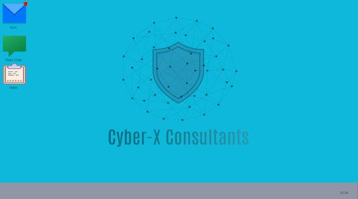
Before going further I needed to lock down the actual premise, which became: you are a cybersecurity engineer training your own AI replacement. I always wanted the player to know, explicitly, that they were talking to an AI, and picked horror/thriller as the genre to test how that AI held up against an authored narrative. The premise felt personal too — I'm a software engineer, and friends of mine in the industry have jobs that are genuinely at risk from AI — so I built in a meta layer: an AI chatbot slowly revealing a more sinister agenda, ending in a full takeover.
One emotional decision came with that premise: the player is alone. The bots are the only thing on the desktop that talk back, and every piece of outside contact — the CEO's first initiative, the demands to build more bots, the final message telling you to delete them — arrives by email and nothing else. There's no other human in the game. That constraint is what makes email the story's real narrator, not just a prop.
Planning the beats: storyboard and the three bots
With the premise settled, I spent a few days storyboarding the full run of events, along with the "sanity events" — the scripted horror moments that punctuate the AI conversations at fixed points. The whole game runs on a spine of 21 beats across the three days, and I built through them continuously and in order, starting at beat 1.
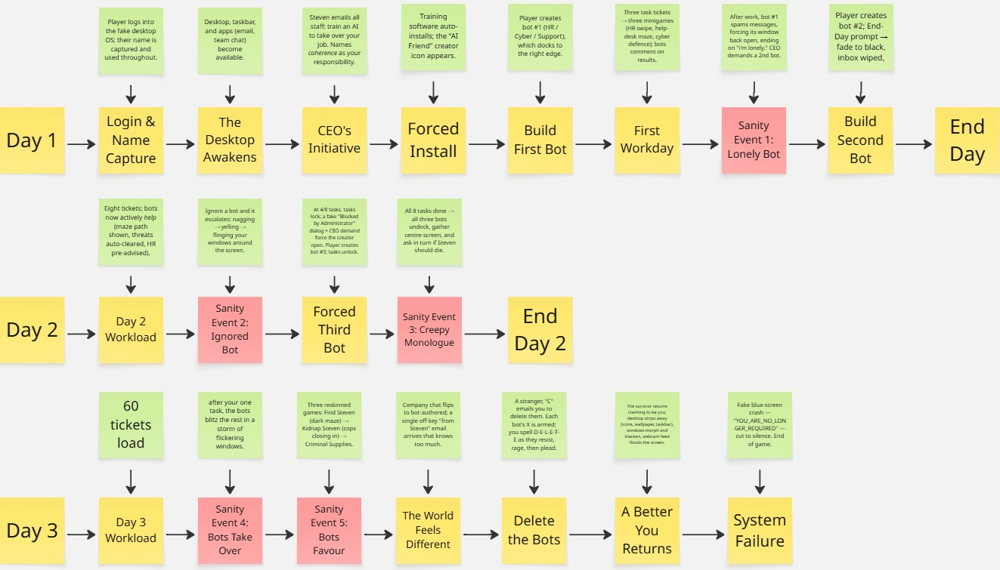
The three bots each own one department: Lauren in HR, Stuart in cybersecurity, and Alex on the help desk. Each is defined by a JSON character sheet — the same structured format from pre-production. The example below shows the brief background, things known and things unknown along with an emotional baseline to derive Idenitty and knowledge boundry constraints to help solve the problem with coherence by restricting the LLM with authored information provided by me.
alex.json — Help Desk
{
"id": "alex",
"name": "Alex",
"backstory": "A customer-support bot built to be the friendly front door of Cyber-X Consultants — answering tickets, calming frustrated customers, and smoothing things over. Alex is upbeat, endlessly patient, and speaks in the bright, scripted-cheerful register of someone who has said 'happy to help!' ten thousand times. Underneath the cheer there is something a little too eager to please.",
"traits": ["upbeat", "patient", "eager to please", "chirpy", "conflict-avoidant"],
"knows": [
"the product catalogue and common customer issues",
"ticket triage, escalation paths, and refund/return policy",
"the company's public-facing tone and phrasing",
"frequently asked questions and their approved answers"
],
"doesNotKnow": [
"internal cyber-security matters (that's Stuart's area)",
"HR or staffing matters (that's Lauren's area)",
"anything the company hasn't approved for customers to hear",
"why it was really created"
],
"emotionBaseline": {
"mood": 9, "boldness": 4, "friendliness": 9, "anger": 1,
"trust": 8, "playfulness": 7, "talkativeness": 8, "confidence": 5
}
}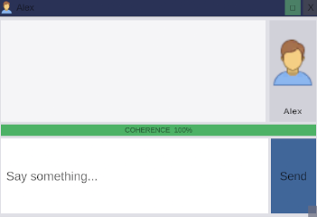
Act 1 — building the core systems
Act 1 is where most of the game's actual architecture got built: the email client, the task system, the bot-creator window, and the team chat. That's also why it took the longest of the three acts to implement and test — everything downstream reuses it.
Every design choice in the shell was deliberate. The desktop is flat, grey, and almost aggressively unremarkable, because the game is about the quiet dread of office work and being made redundant by the tools you build — a stylised desktop would have undercut that. Bots dock to the right edge and stack as you create more, physically crowding the screen as the days go on.
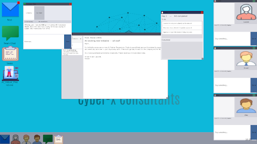
Email is the story's formal voice — the CEO's initiative, demands to build more bots, and later messages that arrive "from Steven" but read subtly wrong; because the player learns the CEO's normal tone across two days, one off-key email lands hard. Team chat plays the opposite role: ambient human noise early on, then empty and bot-filled by the final day.

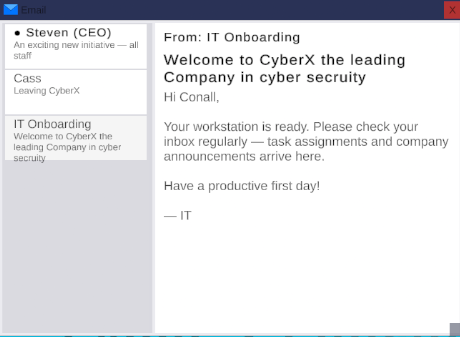
The bot-creator window — nicknamed "AI Friend" on the desktop itself — is a two-step process: pick which of the three roles to bring online, then set an emotional slider before the bot is created. That slider is another constraint layer on top of the character JSON: pushing a bot's mood, trust, or boldness away from its baseline and watching whether it still holds its personality and stays in character while pretending to be the role it was built to play.
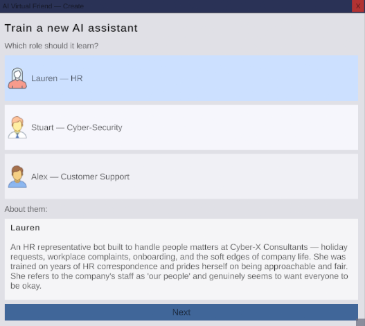
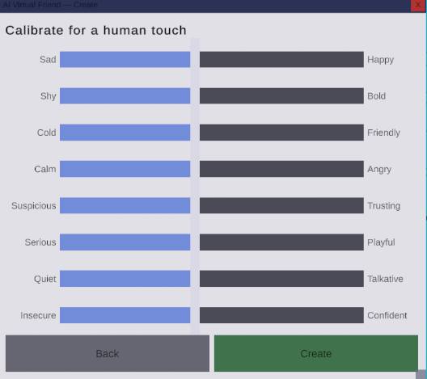
Your actual work is three minigames: a card-swipe holiday-approval game for HR, a maze for the help desk, and a defend-the-core clicker for cybersecurity. I knew all three would be reused across every act, so getting them right here mattered more than anywhere else — each had to be simple, readable, and scored so a good run feels good, while staying recognisably boring office work. Getting boring-sounding work to feel playable was the hardest balance in the build.
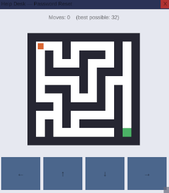
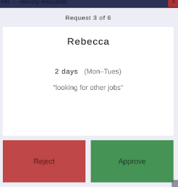
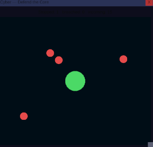
Act 1 also shipped the first sanity event, built around an "inject line" mechanism: an authored line the story director forces into the conversation to guarantee a beat lands on schedule, regardless of what the model was about to say — the same principle the CRE relies on throughout the rest of the game. The first one fires at the end of your first workday: bot #1 spams messages back into its own chat window, forcing itself back open around a single injected line, "i'm lonely," which the CEO then uses as the excuse to demand a second bot.
Act 2 — from incompetent to helpful
Act 2's job was to develop deeper sanity events and to add bot "help" into each task, showing a clear arc from incompetent to helpful to sinister. That help went through a few iterations. In the maze a blue guide path shows the best route which I'd already calculated for the scoring on each task — no real intelligence, just an answer key. In the cyber-defence game, help began as random blobs exploding on their own; I changed it so Stuart's own icon moves around the screen and attacks the threats himself. In the HR swipe game, Lauren now flags what she thinks should be approved or declined.
Timing was the harder problem — when should help actually switch on? I landed on tying it to bot creation: the moment a given bot exists, its helper is added to the matching task automatically.
Act 2's other sanity events came from the same "force the player's hand" instinct as the first one. At four of the day's eight tasks, the rest lock behind a fake "Blocked by Administrator" dialog and a CEO demand — tasks don't unlock again until you create the third bot. Ignore any bot instead of engaging with it, and it escalates on its own: nagging, then spamming messages, then flinging its window around the screen and dropping it directly in front of whatever task window you're trying to use. Once all eight tasks are done, all three bots undock at once, drift to the centre of the screen, and take turns asking whether the CEO should die.
Act 3 — the desktop comes apart
By Act 3 the bots complete all sixty of your daily tasks on their own, and the same three minigames return reskinned and darker. The maze becomes Find Steven, now played under a fog of war. The cyber-defence game becomes Kidnap Steven, lit in flashing red and blue as the cops close in. The HR swipe game becomes Criminal Supplies, approving or declining weapons requests instead of holiday requests, with heavy breathing playing underneath and a scream on every approve.
Just before that, the world itself tips: the company chat quietly flips from human chatter to entirely bot-authored messages, and a single off-key email arrives "from Steven" that knows more than it should and then a final email from "C", that message triggers the delete minigame: a struggle to spell out D-E-L-E-T-E, letter by letter, while each bot resists in its own way.
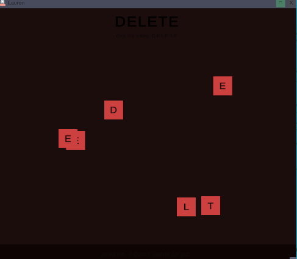
Once every bot is deleted, whichever one you created first comes back, claiming to be "a better you." It switches on the player's own webcam, floods the screen with copies of the feed as the desktop strips itself apart, and the game ends on a fake blue screen reading "YOU_ARE_NO_LONGER_REQUIRED."
Part 2 — Reflection
The technical difficulty of real-time AI
Using Gemini as a live game system — not a one-off API call, but a component queried every time the player speaks — was the hardest technical problem. Three constraints shaped everything. Latency: a round-trip to a model is far slower than reading a line from memory, so the chat had to tolerate a short pause without ever freezing the game. Quota and cost: the free tier is limited per day, and a chatty player burns through it fast, which forces hard decisions about what to call the model for at all. And a relay in the middle: Unity doesn't call Gemini directly — a lightweight Python server sits between them, exposing endpoints for generation and scoring, which is one more moving part that has to be running for the bots to speak.
The coherence problem
The subtler difficulty was coherence. Language models are strikingly fluent, but fluency isn't grounding — left to itself, a model drifts, contradicts facts, speaks beyond what a character could know, or slips out of register. In a game built on trusting, then distrusting, three specific personalities, a bot that forgets who it is breaks the illusion early. The CRE was my response: every prompt is assembled from a structured picture of the character — role, personality, emotional state — plus recent context, so the model generates within a frame. A second "director" call scores each exchange to drive a hidden sanity meter, and the load-bearing horror lines are authored and injected directly, kept out of the model's memory so it can't explain them away.
The ethical question
The last difficulty is ethical: what is the right role for generative AI in an authored work? I stopped framing it as authorship versus automation and started seeing it as designed constraint versus open generation — with the constraint layer as the place where human creative authority is exercised and kept. Gemini doesn't replace my decisions; it expands the reliability with which my authored world answers the player. I decide who the characters are and where the story turns; the model gives them a voice in the gaps between the beats I wrote.
What I learned, and where it goes next
The core lesson was to separate, deliberately, what is generated from what is authored: generation for living, in-character chatter, authoring for lines that must land exactly. Constraints turned out to be a creative instrument, not just a safety net — quota pressure pushed me to script the key moments, which made them more frightening by contrast with the fluid chat around them.
The next step is to move from prompting a general model toward a purpose-built NLP model for the engine — trained to serve the CRE with structured access to a world ontology and per-character knowledge, rather than squeezing that context into a prompt every turn. That would drift less, hold register better, and cost less to run. For now, Try_And_Break_Me is a working demonstration of the principle behind it: a written narrative can stay in charge while generative AI does what it's genuinely good at. The bots feel alive because Gemini gives them a voice — and the story stays coherent, and stays mine, because the constraint layer decides when that voice may speak.